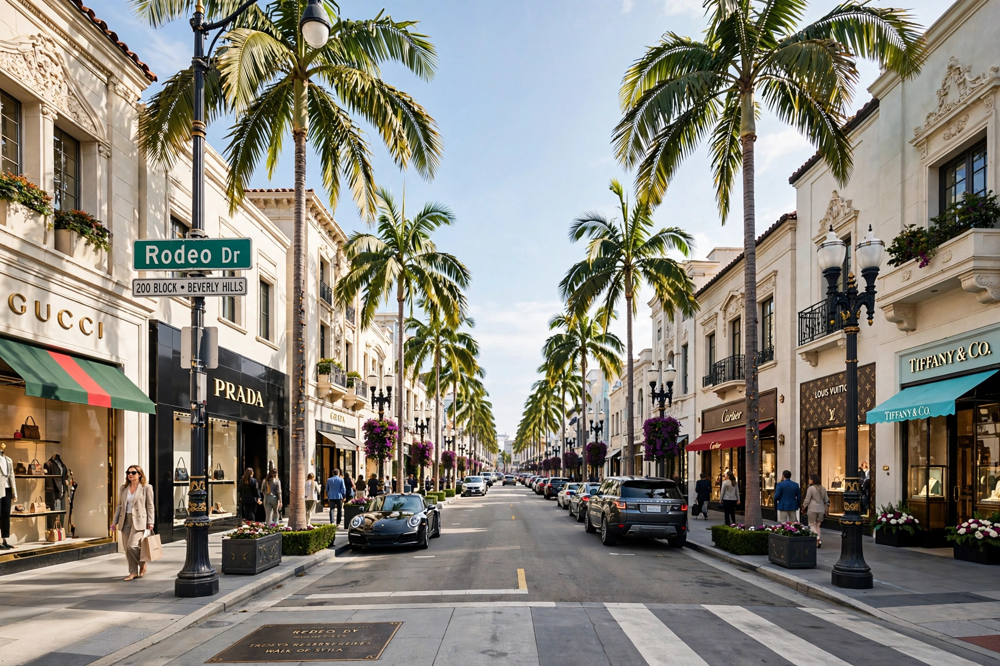

| Location | Beverly Hills, California, U.S. |
|---|---|
| Length | 2 mi (3.2 km) |
| Known for | Luxury shopping district |
Rodeo Drive is a two-mile-long street in Beverly Hills, California, with a southern segment in Los Angeles. Its three-block golden triangle, between Wilshire and Santa Monica Boulevards, is known internationally as a luxury shopping district.
The land was part of Rancho Rodeo de las Aguas. Beverly Hills was developed in the early 1900s; Giorgio Beverly Hills opened in 1961, launching Rodeo's transformation. By the 1970s–80s flagship stores of Gucci, Cartier, Louis Vuitton, Chanel, and Bijan made it a symbol of affluence.
Rodeo Drive features the Two Rodeo Drive cobbled complex and Rodeo Drive Walk of Style. It is featured in films such as Pretty Woman (1990) and is a major tourist attraction, especially at Christmas. Its name is pronounced "roh-DAY-oh."